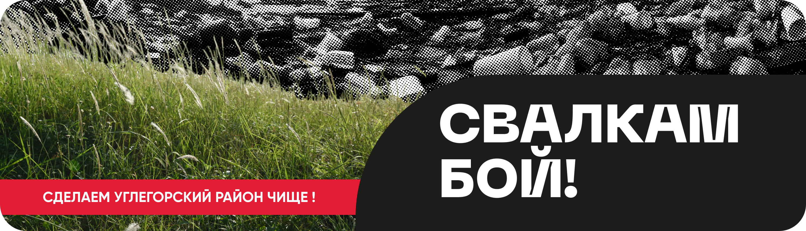

Свалкам бой! - это интерактивное приложение, разработанное специально для борьбы с несанкционированными свалками. При помощи этого приложения пользователи смогут эффективно маркировать и сообщать о местонахождении несанкционированных свалок, что поможет местным властям, волонтерам и экологическим организациям в ликвидации и предотвращении таких проблем. Совместными усилиями мы можем сохранить нашу планету для будущих поколений!
{% for news in news_list %}
 {% endfor %}
{% endfor %}